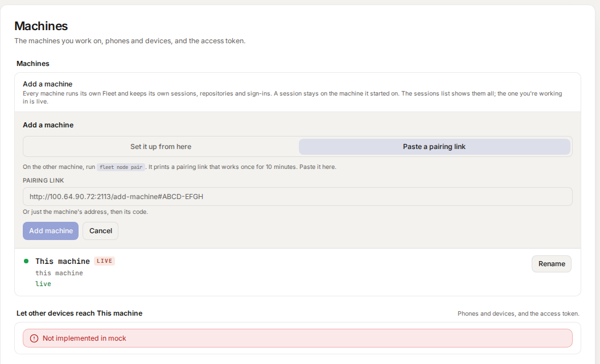

Every way a customer could set Fleet up, starting from nothing: what they install first, what they want to reach it from, and the clear path for each. One model and three actions cover all of them.
Every journey below uses the same few words and actions. A customer who learns one journey already knows the rest.
fleet node runs it without one. Your phone, a browser and the desktop app's window are screens that look at your Fleet. Connect a screen to any machine and you see all of them. Add a machine from any screen and every screen sees it."Screen" here is a word for this page only. In the app it's "your phone", "this browser" or "the desktop app", and there are never two names for one thing.
A machine shows a code: the desktop app's Add your phone, or the terminal after fleet node up. Scan it or type it. The screen gets its own key for every machine in your Fleet, now and later.
A new machine waits with a code (fleet node up or fleet node pair) and says it's waiting on Tailscale and your home network. Any connected screen, phone or desktop app, lists it under Found. Check the code matches, then add it. Or paste one line from the desktop app, which adds it straight away.
Remove a phone or forget a machine from any screen, and it's gone from every machine in your Fleet. One place, not one per machine.
The usual start. Fleet runs on this computer straight away, and its first run offers your phone.
J1J2J3J4J5
A server, a box in the cupboard, a cloud machine. One install line, then fleet node up. Then connect a phone, a desktop app, or both.
J6J7J8J9J10
Someone installs the phone app first and has nothing for it to connect to. The app tells them where Fleet runs and sends the link to their computer.
J11
In J6 and J9 there's no desktop app at all; a phone and two servers make up the whole Fleet. In J7 the desktop app comes last. A laptop that sleeps can't be the one machine the phone needs in order to learn about the others. So every machine keeps the list, and any of them can add the next.
fleet node share ~/.weave, so on one computer the app may open the node, which has no web app (J8; read in the code, not tried).What the customer does, in order, and whether it works today. Click a journey to see it.
| The customer wants | Their path | Today | |
|---|---|---|---|
| A · Starting with the desktop app | |||
| J1 | Fleet on this computer |
| works |
| J2 | …and my phone, walking around the house |
| doesn't work The app listens on this computer only. |
| J3 | …and my phone away from home |
| doesn't work Its steps are command-line flags. |
| J4 | …and a server I only reach by terminal |
Or Over SSH from the desktop, with no terminal. | partly Copy a link from the terminal; the phone never sees it. |
| J5 | …and another server |
| partly |
| B · Starting with a machine that has no screen | |||
| J6 | A server, used only from my phone |
| doesn't work 409: needs a Fleet with the web app. |
| J7 | …then the desktop app on another computer |
| partly Works by pasting a link, after first run. |
| J8 | …then the desktop app on the same computer |
| likely broken The app may open the node, which has no web app. Read in the code; needs a check. |
| J9 | Two servers, only my phone |
| doesn't work |
| J10 | Two servers, the desktop app and the phone |
| partly The desktop app works with two pastes; the phone can't reach either server. |
| C · Starting with the phone | |||
| J11 | I installed the phone app first |
| dead end It says to open Fleet "on the machine". |
| Later changes | |||
| J12 | A second phone, a tablet, a browser on another computer | Same as connecting the first phone, from any machine. | partly |
| J13 | A new laptop, or the desktop app reinstalled | As J7: first run finds your Fleet; approve on the phone. Forget the old laptop. | partly Paste a link for each machine again. |
| J14 | I lost my phone | Remove it on any screen: signed out of every machine. | partly One removal per machine. |
| J15 | A machine is gone for good | Forget it on any screen: gone everywhere. | partly |
Most people start here. First run says what a machine is in one line, and offers the phone up front, because that's the next thing people want. Nothing about servers until they ask.
The welcome wizard's last step ("You're all set") gets two lines and one optional button. "Not now" is the default.Today the wizard covers harnesses only, and /welcome is a placeholder.
Claude Code is ready on studio, this machine. Its sessions run here.
Settings → Machines with one machine. The page answers "what are machines?" in its description, and shows who can see studio: here nothing but this window yet.It replaces the separate "Let other devices reach This machine" group: the phone sits under the machine it reaches.
One switch replaces the command-line flags. The window keeps signing in without a key; every other device and machine has to bring its own key. Fleet shows the addresses it found, so you never type one.Build note: a second listener (home network and Tailscale) that always asks for a key, next to the loopback one the window uses. The loopback sign-in stays tied to the loopback listener, so a proxy can't fake it.
The phone's code carries every address studio listens on, so no one types or chooses a URL. The desktop app says in plain words where the phone will work: at home, away from home, or both.
"Add your phone" opens one card: the code, what the phone will be able to reach, and nothing to fill in. It's the same card from the welcome wizard, Machines, or the command palette.Compare today: a three-item checklist with command-line steps, then "Which address will the phone open?" with a .ts.net placeholder.
On your computer, open Fleet and choose Add your phone. It's in Settings → Machines.
Scan the code Type the codeThe phone scans the code. The code holds studio's id, name, a one-time secret and its addresses (Tailscale, home network). The phone tries each address, checks studio's id before it sends anything, and keeps the ones that answer.The scan works from wherever the phone can reach studio. Typing the code instead finds studio on the same Wi-Fi, so no address is needed there either.
Point the camera at the code.
Fleet looks for it on this Wi-Fi.
One confirmation, phrased as "your Fleet". It says what the phone will see, including that more machines will arrive by themselves.
You'll see studio's sessions, answer its agents and get its notifications. Machines added to studio later show up here by themselves.
The phone's Machines tab shows each machine with where it's reachable right now. Away from home and without Tailscale, the row says so and says what would fix it.
Add a machine on your computer, in Fleet's Machines page, and it shows up here.
At home the phone uses the Wi-Fi. Away from home it needs a way in, and Fleet runs no relay of its own. Tailscale is the recommended way, and Fleet checks each part rather than listing commands. People with their own tunnel or domain get one field, kept out of the way.
From the phone's "Home Wi-Fi only" row, or studio's row in Machines: Use studio away from home. Three checks, each done by Fleet, each with one button.
Tailscale is a private network between your own devices. Your phone reaches studio through it from anywhere. Nothing goes through Weave.
Have your own tunnel or domain? Use my own address
studio answers only on your home Wi-Fi. With Tailscale on this phone and on studio, it answers anywhere.
When the last check passes, both screens say so. The phone keeps both addresses and uses whichever answers: the Wi-Fi at home, Tailscale away.
hangar is a Linux box Alex reaches only over SSH. The terminal does the work and always prints the next step. The desktop app finds hangar on its own while it waits, and both screens show the same code, so Alex can check it's the right machine before adding it.
The install line is the same as today. Its last lines now say what to do next, for both kinds of machine.
alex@hangar:~$ curl -fsSL https://fleet.tryweave.io/install.sh | sh Downloading Fleet 0.74.0 for linux-x64… done ✓ Installed in ~/.weave/fleet Next: This machine has no screen, so run Fleet here without a window and add it to the Fleet you work from: fleet node up (On a machine with a screen, run `fleet` to open Fleet in your browser.) alex@hangar:~$
fleet node up checks what hangar has before asking anything, then asks one question with the answer it recommends already picked.The harness check is new: today fleet node up doesn't look for one, so a machine with no harness is only found out when a session is started there.
alex@hangar:~$ fleet node up Setting up hangar as a Fleet machine (no window; sessions run here) ✓ Tailscale is on hangar.tail4f2a.ts.net ✓ Home network 192.168.1.31 ✓ Claude Code 2.4.1 will run sessions here – OpenCode not installed (optional: fleet harness add opencode) How should your other machines and your phone reach hangar? › Tailscale and home network recommended · only your devices can try Home network only anyone on it can try a code Only over SSH the desktop app reaches it through SSH; phones can't ↑↓ to choose, Enter to confirm
hangar starts in the background, then waits to be added and shows a code. On studio, Add a machine already lists hangar under Found, because hangar announces itself on Tailscale and the home network while it waits. The same code on both screens means it's the right machine.The terminal QR is for the phone-only setup: the phone app can add a machine too, if no desktop app is around.
✓ Listening on Tailscale and your home network, port 6262 ✓ Runs in the background and starts with the machine ✓ Its master key stays on hangar Add hangar to the Fleet you work from In the desktop app: Settings → Machines → Add a machine. hangar is listed under Found. Check the code matches: 7KQ4-M2XD Or scan with the Fleet phone app: ● Waiting to be added… (9:52 · Ctrl-C to stop waiting; hangar keeps running. A new code: fleet node pair)
Clicking Add shows what adding means, with the code in large type to compare. This is today's MachineAddNote, put next to the code.
Both screens confirm. The terminal says where hangar's sessions appear and that the phone sees it, so the next step is clear without going back to the desktop.
✓ Added to studio (Alex's desktop app) hangar's sessions show in studio's sessions list. Phones connected to studio see hangar too. Status: fleet node status Add it elsewhere: fleet node pair Stop it: fleet node uninstall-service alex@hangar:~$
Over SSH (today's "Set it up from here") stays as the second way in: pick hangar from the Tailscale or SSH list and studio installs and starts Fleet with your own SSH keys. The only change is the name, so the terminal's "Only over SSH" and the dialog use the same words.
The phone app gets an Add a machine button that scans the terminal's QR code. The phone is then the place that holds hangar's key. It's rare, but it means setup C works for someone with just a phone and a server.
For a second machine, Alex is already at the desktop app. So the desktop hands out the code this time: On a new server gives one line to paste over SSH. The line installs Fleet, starts it, and adds it to studio, with no code to check, because the code came from studio. The phone hears about atlas from studio and adds it by itself.
Add a machine → On a new server. The line carries a one-time join code for studio and studio's addresses, much like the phone's code. It works for 30 minutes and only once.
On atlas, the line runs install.sh, then fleet node up --join. It uses the same checks as on hangar, but asks no question: Tailscale is on, so it picks Tailscale. The desktop app shows atlas arriving, step by step.
root@atlas:~# curl -fsSL https://fleet.tryweave.io/install.sh | sh -s -- --join 'studio.tail4f2a.ts.net#J8RT-4WXN' ✓ Installed Fleet 0.74.0 ✓ Tailscale is on atlas.tail4f2a.ts.net ✓ Claude Code 2.4.1 ✓ Listening on Tailscale, port 6262 ✓ Runs in the background and starts with the machine ✓ Added to studio atlas's sessions show in studio's sessions list. root@atlas:~#
studio tells every connected phone that it has a new machine, along with a key the phone can use for it. The phone adds atlas on its own and checks which of atlas's addresses it can reach.The phone web app already gets device grants like this from its home machine. The native app needs the same thing, plus a push when a machine joins.
atlas is a cloud server, so it's only on Tailscale. A phone without Tailscale can't reach it. Two ways to handle that; this is decision 6.
studio passes atlas's traffic on while studio is awake. When studio sleeps, atlas is out of reach too.
From scratch: SSH into hangar, nothing else installed anywhere except the phone app.
The install and fleet node up are the same as J4 (checks, then one question about reach). The difference is the end: with no desktop app around, the terminal's QR code is the way in. The phone connects to hangar directly, and hangar becomes the first machine in a Fleet of one.
After the reach question, fleet node up shows one code for both kinds of screen: scan it with the phone app, or find hangar under Found in a desktop app.Needs: a machine with no screen makes phone codes. Today that's refused with 409.
✓ Listening on Tailscale and your home network, port 6262 ✓ Runs in the background and starts with the machine Connect a phone or a desktop app to hangar Phone: open the Fleet app and scan this code. Desktop app: Settings → Machines → Add a machine. hangar is listed under Found, with the code H4KD-92QX ● Waiting… (9:58 · Ctrl-C to stop; hangar keeps running. A new code: fleet node pair)
Point the camera at the code.
The phone confirms what it's connecting to, and says plainly that hangar has no screen, so the phone is where the work happens. The terminal confirms too and prints what to do next.
hangar has no screen. You'll start its sessions, answer its agents and get its notifications here. Machines added later show up by themselves.
✓ Alex's iPhone is connected to hangar Start sessions from the phone; they run here. Harnesses here: Claude Code 2.4.1 Connect another phone or a desktop app: fleet node pair Status: fleet node status alex@hangar:~$
On the phone, New session already knows the only machine there is, and lists hangar's folders. Nothing on the phone mentions machines until there's a second one.
From scratch: hangar from J6 (with or without the phone), then Alex installs the desktop app on studio.
The desktop app's first run looks for Fleet on Tailscale and the home network before anything else. If your Fleet is already out there, joining it is the first choice, not something found later in Settings. studio then joins your Fleet as a machine too, so its own sessions and hangar's sit in one list.
The welcome's first screen. "Start fresh" is still one click away for someone who wants a separate Fleet.
Found Fleet on your network.
Joining needs a yes from a screen already in your Fleet, or from hangar's terminal. Both show the same code. With a phone connected, nobody has to open a terminal.
Approve studio on Alex's iPhone, or on hangar run fleet node pair. Check the code matches:
A desktop app on macOS. It will see your machines' sessions and can run agents on them.
The harness step comes next, and it knows about hangar: if studio has no harness, "run on hangar" is already the answer.
You can pick per session too.
From scratch: workbench (a Linux desktop) runs fleet node as a service. Later Alex installs the desktop app on workbench.
One computer should be one machine, not two Fleets fighting over ~/.weave. The app sees the Fleet that's already running and uses it. It can do that safely because it's the same user on the same computer, so it can read the machine's key file.
Shown instead of the welcome. Its sessions, harnesses and settings are the ones you already have.Today (from the code, not tried): the app finds the node's fleet.instance.json in the shared ~/.weave and opens its loopback address. But a node serves no web app and asks for a key, so the window probably shows the node page or nothing. Worth a check of its own.
workbench runs Fleet in the background (started with fleet node, 12 Nov). The desktop app will use it: same sessions, harnesses and machines, and it keeps running when you close the window.
From scratch: hangar and the phone from J6. Then Alex sets up atlas, a cloud server, with no desktop app anywhere.
atlas's fleet node up finds your Fleet on Tailscale and waits to be added. The phone, already connected to hangar, gets the request. Add it there, and hangar and atlas know each other, so the phone (or a desktop app later) sees both.
The same code is on atlas's terminal and in the phone's sheet. Away from Tailscale or the home network, atlas can't be found, so the phone's Add a machine scans atlas's terminal QR instead.
root@atlas:~# fleet node up --tailscale ✓ Tailscale is on atlas.tail4f2a.ts.net ✓ Claude Code 2.4.1 ✓ Listening on Tailscale, port 6262 ✓ Runs in the background and starts with the machine Found your Fleet on Tailscale: hangar (Alex's iPhone) Add atlas from a phone or desktop app connected to it. Check the code matches: 7KQ4-M2XD ● Waiting to be added…
Linux · Claude Code · found on Tailscale. Your Fleet can run agents, change files and open terminals on it.
atlas is in your Fleet. hangar and atlas each keep the list, so the phone keeps working with atlas while hangar is off, and a desktop app joining later sees both.
✓ Added to your Fleet by Alex's iPhone Your Fleet: hangar, atlas Start sessions on atlas from the phone or any desktop app. root@atlas:~#
From scratch, in any order: J4 + J5 (desktop first), or J9 then J7 (servers and phone first, desktop last).
Whatever the order, it ends the same way: three machines, one list, and every screen sees all of them. The only step that differs is the desktop app's first run, which finds the whole Fleet, not one machine.
First run on studio after J9. One join, one approval on the phone, and both servers are there.
Found Fleet on your network.
Machines on studio and on the phone after any of the orders.
From scratch: someone finds Fleet in the App Store before anything else.
The phone can't run Fleet, so its job is to send the person to the right install and wait. The website's download page asks the same question, so both places agree.
"I don't have Fleet yet" sits under the scan button. It explains where Fleet runs and sends the link to the computer, since the phone isn't where you install it.
Fleet runs on a computer or a server, and shows a code to scan.
Scan the code Type the code I don't have Fleet yetWhen it's running it shows a code. Come back here and scan it.
fleet.tryweave.io/download asks the same question. Each answer leads to one path: J1, J4/J6, or "you need one of the other two first".
Exactly like the first phone (J2 or J6), from any machine in your Fleet: the desktop app's Add your phone, or fleet node pair in a terminal. A browser on another computer opens any machine's address and shows "Connect this browser" with a code to type, which a connected screen approves. Like the phone, it gets keys for every machine.
The same as J7: first run finds your Fleet, and the phone approves. The old laptop shows as out of reach on the Machines page with a Forget button. Today each machine has to be added again by pasting its link.
Remove it on any screen. Every machine forgets its key, including machines that are off right now: they hear about it as soon as they're back. Today the native phone app has a separate key on each machine, so it's one removal per machine.
The shared confirm dialog, naming everything the phone loses.
Forget it on any screen: every machine and screen in your Fleet stops listing it and throws away its key. Its sessions' history stays readable where it was copied, and is marked as from a machine that's gone. If it comes back by surprise, it's a new machine and has to be added again.
This answers "what's the phone URL, and why do I choose it?". Today the QR code carries one address, so Fleet asks which one. In the new setup the code carries every address the machine has, the phone tries each one (checking the machine's id before it sends a key), and the only question left is how far the machine should be reachable.
| The machine is reachable on | Phone on your home Wi-Fi | Phone away, with Tailscale | Phone away, no Tailscale |
|---|---|---|---|
| This computer only (desktop app's default) | no Add your phone asks to change this | no | no |
| Home network | yes | no | no "Home Wi-Fi only" |
| Tailscale and home network recommended | yes | yes | no "Install Tailscale on this phone" |
| Your own address (a tunnel or domain, https) | yes | yes | yes |
The phone app may use plain http on Tailscale and home-network addresses once the machine's id checks out. The phone web app (Fleet in the phone's browser) needs https to install and to show notifications. That's why today's checklist asks for https and tailscale serve. With the phone app as the main path, https is only needed for "your own address".
Each machine has its own row on the phone, with where it's reachable right now. A server only on Tailscale reads "Out of reach from this phone" when the phone has no Tailscale, and says why. Relaying through another machine is on the Later list (see Decisions).
One list of machines, and under it one list of the phones and browsers that look at them. Each machine says what it is (desktop app or no window) and how it's reached. "Let other devices reach This machine" goes away: reach is a line on each machine, and phones have their own group.

Today, in mock mode: "Add a machine" twice, two tabs, an example link with port 2113, and "Let other devices reach This machine" as a separate group.
Advanced: access token, addresses Fleet tries, and your own address are on each machine's page.
Seven choices shape the build. Each has the one I'd pick.
Any machine can add the next one, and a screen connected to any machine sees them all. Recommended: J6, J9 and J7 have no desktop app or add it last, and a laptop that sleeps can't be the only machine that knows the others. The other way is one home machine that holds every key (today's model, which the phone web app follows): simpler to build, but phone-only setups break when that machine is off.
Drop today's 409 so fleet node up and fleet node pair show a code a phone can scan. Recommended: J6 and J9 need it.
While waiting, a machine says so on Tailscale (reusing the Teams spike's discovery) and on the home network. Phones and desktop apps list it under Found, and a matching code adds it. Recommended, with "paste a pairing link" and scanning the terminal's QR code kept as fallbacks.
A second listener on Tailscale and the home network that always asks for a key; the window keeps signing in over loopback. Off until Add your phone asks. Recommended: J2 and J3 need it.
J8: one computer, one machine. The app reads the key file (same user), opens it, and shows the web app itself instead of relying on the node to serve one. Recommended, after a check confirms what happens today.
A, say so and point to Tailscale (recommended now), or B, another machine relays it (Later list).
The code carries every address; typing one moves under "Use my own address". Recommended.
One PR each, each in its own session. The earlier pieces fix journeys that don't work today; the later ones make the rest smooth.
| # | Piece | Journeys it opens | Size |
|---|---|---|---|
| 0 | Over SSH port bug merged #1073 | J4 via SSH | S |
| 1 | Check J8 (desktop app on a machine that already runs a node) and fix what's broken | J8 | S–M |
| 2 | Words and next steps: install.sh → fleet node up, the README, docs port, one-line "what's a machine", the download page | J4, J6, J11 | S |
| 3 | Desktop app reachable (second listener + switch) | J2, J3 | M |
| 4 | Codes carry every address; machines with no screen connect phones; terminal QR | J2, J6 | M |
| 5 | Your Fleet: every machine keeps the list; a screen gets keys for all; add/remove propagates | J5, J9, J10, J12–J15 | L |
| 6 | Found: waiting machines announce themselves; approve from phone or desktop app; desktop first run joins | J4, J7, J9, J10, J13 | M–L |
| 7 | On a new server: install.sh --join | J5 | M |
| 8 | Away from home guide (Tailscale checks on both ends); phone's reach rows | J3 | M |
| 9 | Machines page: your machines + phones and browsers | all | M |
Later list: relaying (decision 6B); challenge-response before sending a key to a fallback address (already on it). Piece 6's Tailscale discovery should share code with the Teams spike so the two don't fork.